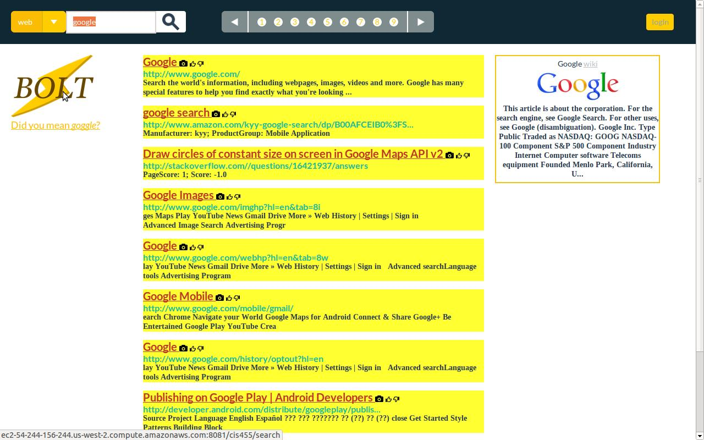
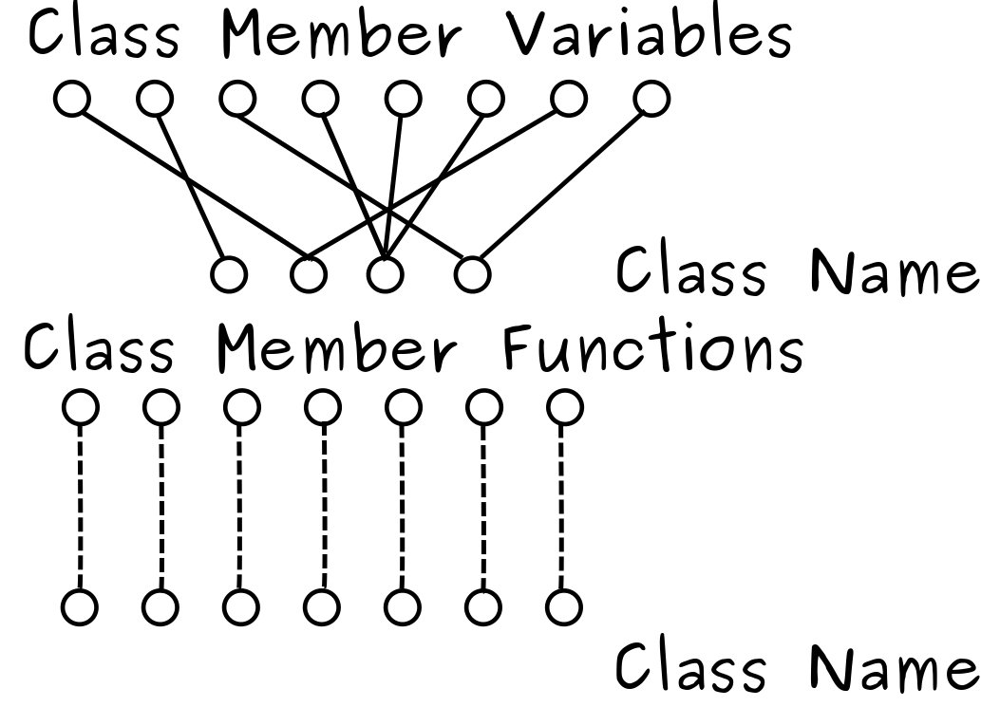
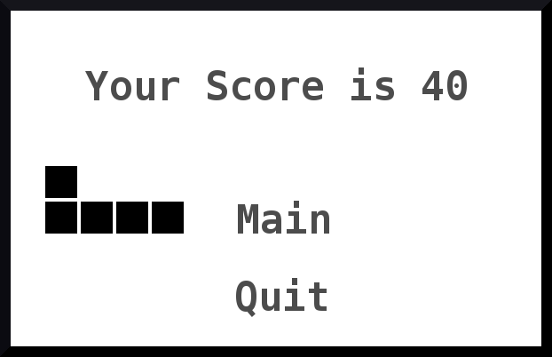
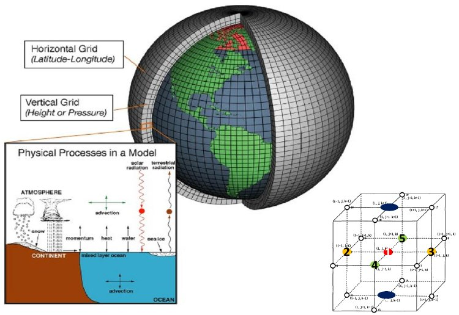

Projects,
Distributed Search Engine From Scratch (May'13)
A Googe-style decentralized search engine, including distributed, scalable crawling, indexing with ranking, and PageRank for result showing. Personally implemented incremental page indexing (200,000+ pages), weighted term frequency calculation (including web page meta-data), natural language processing and performance tuning (36 times faster), and ranking function optimization.

C++ Code Analyzer (Aug '10)
A program written by a four-person group that analyzed function calls and variable references. Group leader, hands-on experience with text parsing.

C Compiler (Dec '12)
A program converting C code to educational assembly language LC-3, with emphasis on stacks, symbol tables, frame pointers and stack pointers.
;; prologue for fun
fun ADD SP, SP, -1
ADD SP, SP, -1
STR R7, SP, 0
ADD SP, SP, -1
STR FP, SP, 0
ADD FP, SP, -1
;; body of fun
;; return 4
AND R0, R0, 0
ADD R0, R0, 4
STR R0, FP, 3
;; epilogue for fun
LDR FP, SP, 0
ADD SP, SP, 1
LDR R7, SP, 0
ADD SP, SP, 1
ADD SP, SP, 1
RET
Eliza (Oct '12)
Eliza, a replica of the early example of primitive natural language processing, simulated a Rogerian therapist by repeating what it was told with appropriate substitutions and giving reasonable responses. String manipulation, program design.
Snake (Nov '12)
Snake, a classic game in arcades and Nokia phones. The controls over speed, difficulty and world size were provided. Observer/Observable development, MVC model, computer animation, Swing experience.

RiemannCalc Package (Dec '11)
Tensor calculation by hand may take hours, while double checking the result is even longer. This is a Wolfram Mathematica symbolic computation package for Christoffel Coefficients and other quantities related to Differential Geometry and General Relativity. Reduced the computation time to seconds.

Atmospheric Simulation on Distributed System (May '11)
First started with OpenMP in C, later on rewritten with MPI. 4-dimension ''matrix'' (tensor) numerical calculation, 10 GB scale data management, multi-core programming experience.
